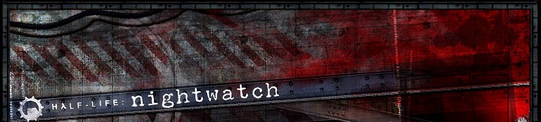

Thanks for tuning in for the Half-Life: Nightwatch retrospective. One of the most gorgeous mods ever seen in the Goldsource engine. Yes, it’s a shame it was never released but hopefully you still get to enjoy reminiscing a bit with me these last couple weeks.
For the grand finale today, here are all the chapters of Nightwatch (Goldsource version, of course) as they looked when the mod was cancelled, 9 years ago in July 2006. Enjoy!